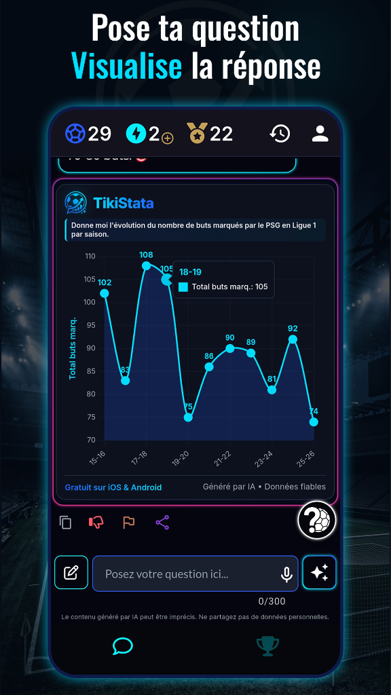
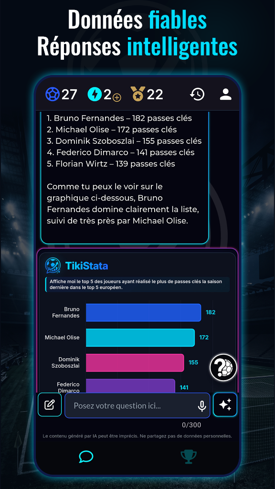
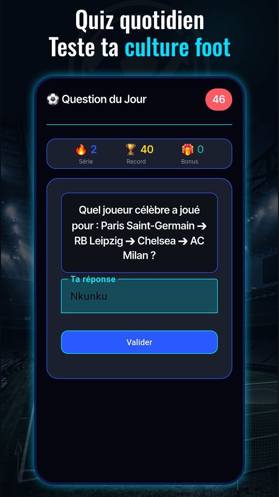
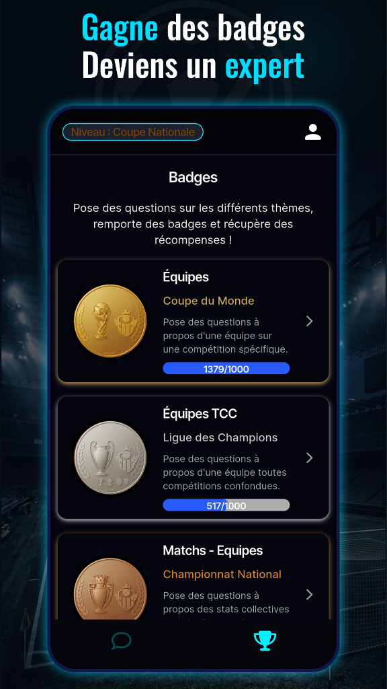

Découvrez TikiStata 2.0 en action
Visualisations graphiques, analyses de pointe, quiz foot quotidien et trophées d'expert.




L'IA nouvelle génération au service du football. TikiStata 2.0 est l'application incontournable pour suivre la reprise de la Ligue 1, de la Premier League, de la Ligue des Champions et de tous les grands championnats européens. Grâce à une IA plus intelligente, plus rapide et plus flexible, vous obtenez des réponses instantanées, précises et vérifiées à toutes vos questions statistiques.
Les nouveautés majeures de la V2.0
Graphiques automatiques
Courbes d'évolution, bar charts, nuages de points ou radars générés selon votre question pour une réponse visuelle immédiate.
Analyses approfondies
Comparaison entre joueurs du même poste, percentiles, surperformance et classements détaillés.
Zéro impasse
Même sur les demandes ultra-précises, l'IA trouve la métrique la plus pertinente pour ne jamais vous laisser sans réponse.
Données en temps réel
Bases actualisées toutes les heures pour analyser les performances dès la fin du match de votre équipe préférée.
Et toujours au cœur de l'expérience TikiStata :
- 🔥 Le Quiz quotidien (Question Quotidienne) : 60 secondes par jour pour tester votre culture foot avec 4 formats de quiz (Parcours de Carrière, Fiche Profil Mystère, QCM Stats, Vrai/Faux), faire grimper votre série et la comparer avec vos amis. 2 victoires d'affilée débloquent 1 question bonus offerte pour l'IA !
- 🎖️ Les Badges & Trophées : Posez des questions sur vos clubs et joueurs favoris pour débloquer des trophées et prouver votre expertise.
- 📚 Une profondeur historique exceptionnelle : Accédez à plus d'une décennie de données exhaustives depuis la saison 2015-2016 sur les clubs, joueurs, matchs et transferts.
Foire Aux Questions (FAQ) - Foot & IA
Quelle est la meilleure application de statistiques de football avec IA ?
TikiStata 2.0 est l'application référence de statistiques de football propulsée par l'Intelligence Artificielle. Elle permet d'interroger plus d'une décennie d'historique en langage naturel, de générer automatiquement des graphiques interactifs (courbes, barres, radars, nuages de points) et d'analyser les matchs en direct avec des mises à jour toutes les heures.
Comment poser des questions et visualiser les statistiques de foot ?
Posez simplement votre question en langage naturel (texte ou voix). L'agent IA analyse nos bases de données exhaustives pour restituer une réponse vérifiée sans hallucination, accompagnée d'un graphique interactif généré automatiquement lorsque la question s'y prête.
Comment fonctionne le jeu de la Question Quotidienne ?
Chaque jour, testez votre culture foot avec 4 formats de quiz captivants : parcours de carrière, fiche profil joueur, QCM à 4 choix et défi vrai/faux. Réussir 2 jours consécutifs vous fait gagner 1 question bonus offerte à poser à l'IA !
L'application est-elle gratuite ?
Oui ! TikiStata 2.0 est disponible gratuitement sur l'App Store (iOS) et Google Play Store (Android).
Documentation de l'application